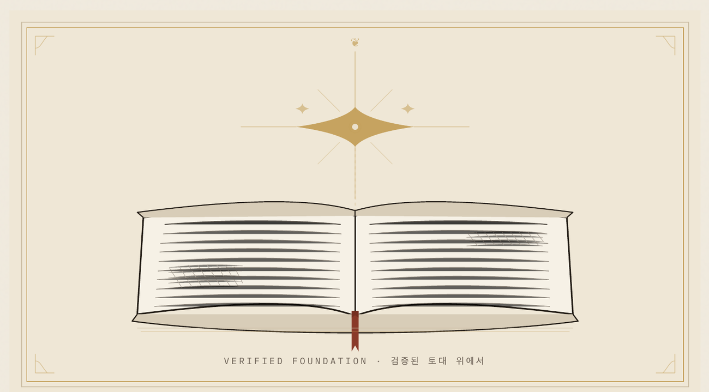

처음 AI를 업무에 들인 건, 제 전문분야도 아닌 보고서 한 건 때문이었습니다. 2년 전 기획부서에 있을 때입니다. 한 번도 다뤄본 적 없는 분야의 검토 보고서를, 그것도 최고경영층이 납득할 수준으로, 일주일 안에 내라는 지시를 받았어요. 막막했습니다. 그래서 막 퍼지던 ChatGPT와 Gemini를 처음 켰습니다.
쉽진 않았어요. 할루시네이션도 있었고, 같은 문장을 반복하기도 했고요. 그대로 믿고 쓸 수준은 아니었습니다. 그런데 묘했습니다. 같은 도구가, 방향만 정확히 잡아주면 놀라운 속도로 일하더군요. 결국 문제는 ‘AI가 되느냐’가 아니라 ‘어디까지 믿느냐’였어요. 그래서 처음부터 한 가지를 정했습니다. 뽑아내는 건 AI에게 맡기되, 틀리면 안 되는 건 사람이 끝까지 검증한다. 돌아보면 그 규율이, 이후 제가 AI로 일하는 방식의 뼈대가 됐습니다.
첫 시험대는 이론이었어요. 원본을 찾으니 200페이지짜리 영어 책이더군요. 요약본이야 떠돌지만, 경영층 결정에 틀린 정보가 들어가면 안 되니 전체를 검증해야 했습니다.
- ChatGPT·Gemini
- 영어 원서 핵심·디테일 검토 · 일주일 데드라인, 200p
- 이종산업 사례
- 동일 현상 발생 여부 확인 · AI 1차 + 수기 검증
- 팀 교차검증
- 할루시네이션·반복 오류 필터링 · 전원 야근
예전 같으면 번역을 돌리고, 200페이지를 다 읽고, 다시 요약했겠죠. 며칠이 걸릴 일이었습니다. 이번엔 AI가 핵심과 디테일까지 한 번에 짚어줬어요. 그렇게 아낀 시간을 놀리진 않았습니다. 틀리면 안 되는 대목을 한 번 더 들여다보는 데 다시 썼어요. 보고서 써본 분들은 알 거예요. 이론 기반이 단단하면 보고서가 덜 흔들립니다. 믿을 바닥이 생기니까요.
AI가 빠르게 끌어와도, 버릴 것을 고르는 건 사람이었어요.

이론만으로는 부족했어요. 다음은 다른 산업이었습니다. 같은 현상이 우리 바깥에서도 일어났는지 찾았어요. 제가 잡은 가설은 단순했습니다. 다른 산업에서 먼저 벌어진 일이면, 우리 산업에도 비슷한 압력이 온다. 그 사례를 모으는 일도 AI가 빠르게 끌어왔고, 보고서엔 ‘왜 지금 봐야 하는가’를 설명할 근거가 하나 더 생겼어요.
검증은 손으로 했어요. AI가 끌어온 사례와 수치를 그대로 두지 않았습니다. 구글과 네이버를 뒤져, 증권사 리포트와 연구소 발간 보고서, 뉴스 원문을 직접 찾아 하나씩 맞춰봤어요. 출처가 안 잡히는 문장은 버렸습니다. 팀 전원이 야근한 것도 그래서였어요.
그 보고서는 떠들썩하게 풀리지 않았어요. 은밀하게, 부사장 이상만 보도록 종이로 인쇄해 직접 전했습니다. 담당도 아닌 부서가 쓴 한 건이, 그렇게 윗선을 조용히 돌았어요.
그 일주일이 시작이었습니다. 그때 배운 건 보고서 쓰는 법보다 검증 루프였어요. 시키고, 의심하고, 다시 시키고, 마지막 책임은 사람이 진다. 다음 해 클로드 코드를 만났을 때도, 저는 그 방식부터 떠올렸습니다. 처음엔 보고서 한 건을 거들던 도구였는데, 반복해서 시키고 확인하고 고치게 만드니 작은 팀이 하던 일의 일부를 대신할 수도 있겠다 싶었어요. 그렇게 _y Tower가 시작됐습니다. 무엇을 짓고 무엇을 지웠는지는, 다음 호에서 하나씩 적을게요.